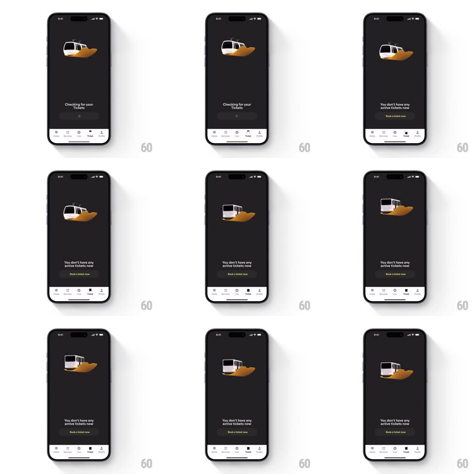

Media
Frame-by-frame

Rebuild this animation 1:1: Namma Yatri's tickets empty state - a metro train hovers on a sand-colored blob while the copy checks for tickets, then the train morphs into a bus as the empty-state message and Book button appear.

Rebuild this animation 1:1: Namma Yatri's tickets empty state - a metro train hovers on a sand-colored blob while the copy checks for tickets, then the train morphs into a bus as the empty-state message and Book button appear. ## Integration Integration: stack-agnostic spec - springs given as stiffness/damping, timed motions as duration + curve; map every value to your framework and animation library of choice. ## Scene Dark Tickets tab: a white metro train on an ochre organic blob centered in the upper half, "Checking for your Tickets" with a shimmer placeholder, becoming "You don't have any active tickets now" with a yellow "Book a ticket now" button; the bottom nav keeps Tickets active. ## Motion spec Pattern: hovering vehicle with empty-state reveal, ~2.5s. - Hover: the train bobs vertically (8px, 2s, ease-in-out, infinite) with a matching soft shadow squash (scale 1 -> 0.92). - Check phase: "Checking for your Tickets" shows with a shimmering skeleton bar (1.2s sweep) for ~1.5s. - Reveal: the train crossfades into a bus on the same blob (350ms) as the copy crossfades to the empty message (250ms) and "Book a ticket now" springs up (spring ~400/20, 300ms). - The blob and the hover loop continue through the reveal. ## Calibration - The hover never pauses - the bob runs under both phases. - Train-to-bus is a crossfade on the same footprint, not a slide. ## Reduced motion Static vehicle; copy crossfades only. ## Don't miss - The vehicle changes (train -> bus) when the empty state lands - that is the transition the clip is about. - The blob stays identical so the vehicle swap reads as a morph.